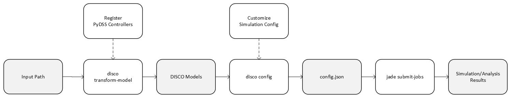

Overview¶
This section gives an overview about DISCO and its workflows.
DISCO can be used for distributed grid system simulation analysis. The analysis types are:
snapshot impact analysis
hosting capacity analysis (based on snapshot impact analysis results)
time series impact analysis
time series hosting capacity
upgrade cost analysis
The diagram below shows the DISCO workflow:
As shown from the diagram, the main steps to run an analysis workflow are:
Prepare the OpenDSS models with a given data source.
Transform the source OpenDSS models into DISCO models.
Configure JADE jobs with the DISCO models.
Run the jobs with JADE.
Data Sources¶
DISCO supports OpenDSS models in several data formats:
GEM Model, Grid-connected Energy systems Modeling
EPRI Model - J1, K1, and M1, https://dpv.epri.com/feeder_models.html
SourceTree1 Model, this format requires directory structure tree1 defined by DISCO - SourceTree1 Model.
SourceTree2 Model, this format requires directory structure tree2 defined by DISCO - SourceTree2 Model.
Transform Model¶
Given an analysis type, the source OpenDSS models need to be transformed into DISCO models which then can be used as inputs for configuring JADE jobs.
Config Jobs¶
DISCO configures JADE jobs from standard DISCO models for specific analysis types. The output is a configuration JSON file.
Submit Jobs¶
JADE parallelizes execution of the jobs on a local computer or an HPC. Execution on an HPC is highly configurable depending on the job resource requirements.
Result Analysis¶
After jobs complete JADE can assist with analysis by showing summaries of individual job status, errors and events, job execution times, and compute resource utilization statistics.